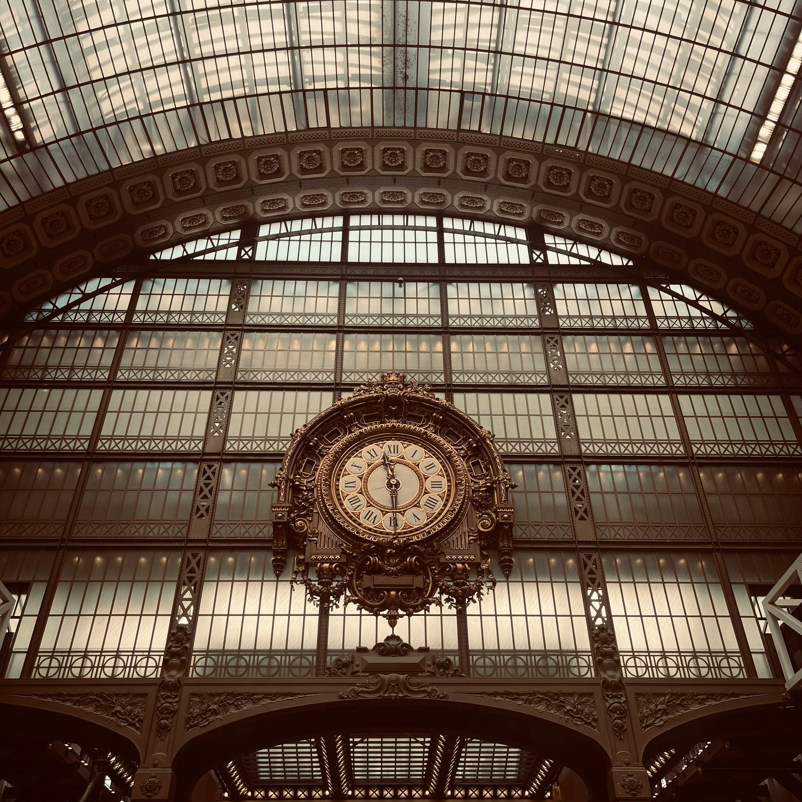
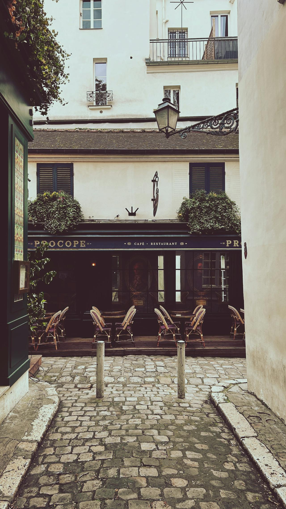
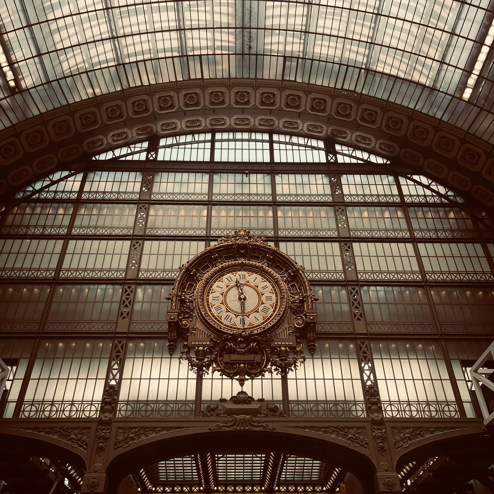
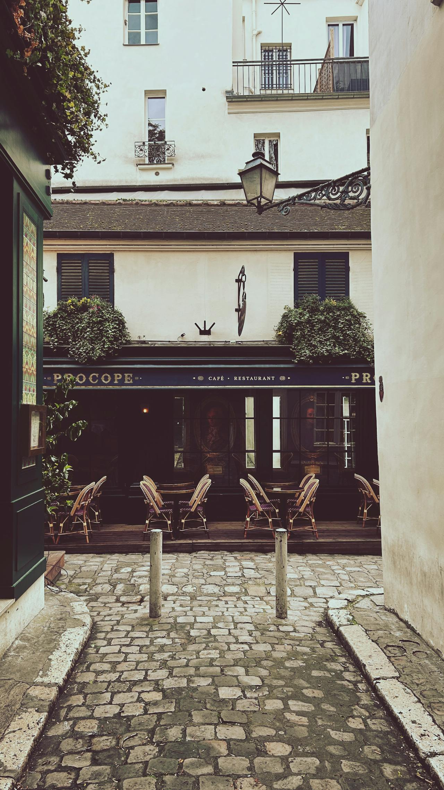

🗓 Day 1

☕️ Breakfast - Café de Flore
Start your day at Café de Flore, one of Paris’ most iconic Left Bank institutions. Known for its Art Deco interiors and famous past patrons like Sartre and de Beauvoir, it captures the intellectual spirit of Paris. Morning is ideal to soak up its old-world charm with a coffee and croissant while watching the neighborhood awaken. Located in Saint-Germain-des-Prés, it’s conveniently close to the Seine and major landmarks like the Louvre and Luxembourg Gardens.
- Recommended Duration: 45–60 minutes
- Travel Time to next stop: 15 mins walk to Louvre Museum
🌞 Morning - Louvre Museum
Dive into centuries of art history at the Louvre, home to masterpieces like the Mona Lisa and Venus de Milo. Visiting in the morning means you can beat the crowds and have more time to explore the massive collection. It's a classic Parisian experience, not just for the art but also the grandeur of the former royal palace.
- Recommended Duration: 2–3 hours
- Travel Time to next stop: 5 mins walk to Angelina Paris
🍽 Lunch - Angelina Paris
Famous for its thick, velvety hot chocolate and elegant Belle Époque decor, Angelina is a perfect midday stop near the Louvre. It's a historic tearoom where Coco Chanel once sipped her chocolat chaud. Popular with locals and tourists alike, it offers a refined yet cozy respite.
- Recommended Duration: 1 hour
- Travel Time to next stop: 10 mins walk to Seine River walk
🏛 Afternoon - Seine River Walk + Notre-Dame Cathedral
Stroll along the Seine’s quays, browsing bouquinistes en route to the Île de la Cité. A visit to Notre-Dame connects you with Paris's medieval heart. The late afternoon light is perfect for photos, and this walk offers both beauty and history in a compact, walkable stretch.
- Recommended Duration: 1.5–2 hours
- Travel Time to next stop: 20 mins walk or 10 mins by Metro to Le Comptoir du Relais
🌇 Evening - Dinner at Le Comptoir du Relais
This renowned Left Bank bistro serves up elevated French classics in a lively setting. With limited reservations and a first-come-first-serve terrace, early evening is your best shot. Located in the 6th arrondissement, it places you near charming post-dinner stroll options like Place Saint-Sulpice or Rue de Buci.
- Recommended Duration: 1.5–2 hours
- Travel Time to next stop: 20 mins by Metro or 30 mins walk to Eiffel Tower
🌙 Night - Eiffel Tower night visit
There’s nothing more quintessentially Parisian than watching the Eiffel Tower sparkle at night. Every hour after sunset, it lights up for 5 minutes with 20,000 twinkling bulbs. Visiting it at night adds a magical quality—crowds are thinner, the city skyline is glowing, and you get panoramic views of the Seine and Champs de Mars from above.
- Recommended Duration: 1–1.5 hours
🗓 Day 2
 



☕️ Breakfast - Du Pain et des Idées
Kick off day two with fresh viennoiseries from Du Pain et des Idées, a beloved artisanal bakery in the 10th arrondissement. Their pistachio-chocolate escargot pastry is a must-try. Morning is the best time to go before they sell out, and it's just a short Metro ride to your next stop at the Orsay.
- Recommended Duration: 30–45 minutes
- Travel Time to next stop: 20 mins by Metro to Orsay Museum
🌞 Morning - Orsay Museum
Housed in a former Beaux-Arts train station, the Orsay offers a more intimate (but no less breathtaking) collection of Impressionist and Post-Impressionist art. Morning visits avoid peak hours and let you linger among works by Monet, Van Gogh, and Degas.
- Recommended Duration: 2 hours
- Travel Time to next stop: 10 mins walk to Le Procope
🍽 Lunch - Le Procope
The oldest cafe in Paris, Le Procope dates back to 1686 and was frequented by Voltaire and Rousseau. Its vintage chandeliers and mirrored walls make for a richly atmospheric meal. It's located in the Latin Quarter, placing you right in the heart of Parisian literary history.
- Recommended Duration: 1–1.5 hours
- Travel Time to next stop: 15 mins walk to Luxembourg Gardens
🏛 Afternoon - Luxembourg Gardens stroll
Take a relaxed stroll through the beautifully manicured Luxembourg Gardens, a favorite of locals and students. The gardens are perfect in the afternoon light, and you can spend 1–1.5 hours wandering the fountains, statues, and tree-lined promenades.
- Recommended Duration: 1–1.5 hours
- Travel Time to next stop: 10 mins walk to dinner in Latin Quarter
🌇 Evening - Dinner in Latin Quarter
Enjoy dinner in one of the lively, character-rich eateries tucked into the Latin Quarter’s winding streets. From traditional fondue spots to modern wine bars, this neighborhood blends historic charm with youthful energy. Evening is when it really comes alive.
- Recommended Duration: 1.5–2 hours
- Travel Time to next stop: 10 mins walk to Pont Neuf for river cruise
🌙 Night - Seine river cruise
A nighttime Seine river cruise is one of the most iconic Paris experiences. Departing from Pont Neuf, the city’s oldest bridge, you’ll glide past illuminated monuments like the Louvre and Notre-Dame. The soft reflections on the water, the breeze, and the slow rhythm create a cinematic atmosphere.
- Recommended Duration: 1 hour